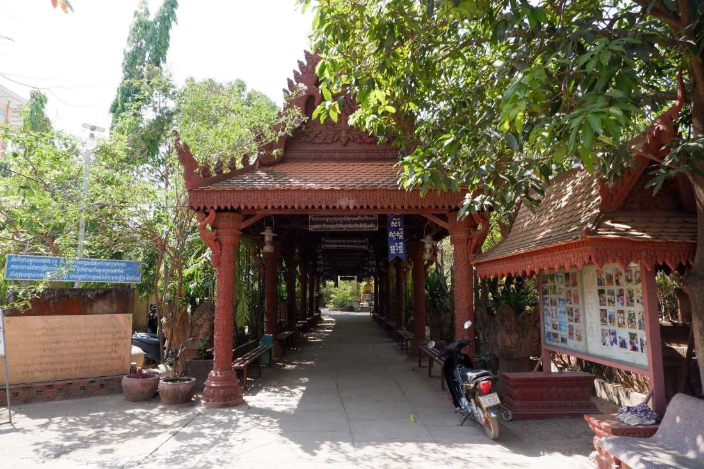
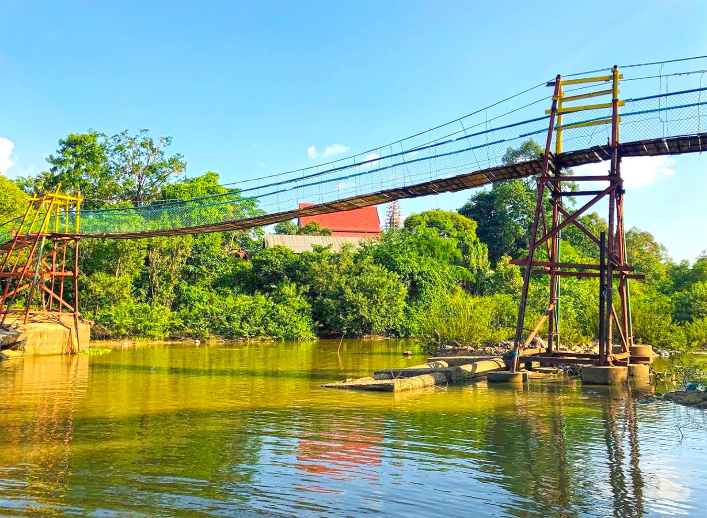
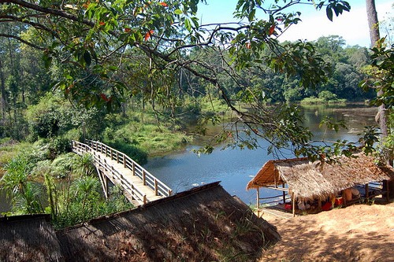
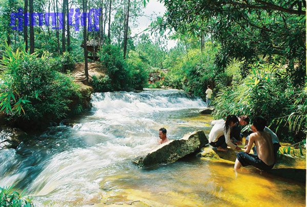
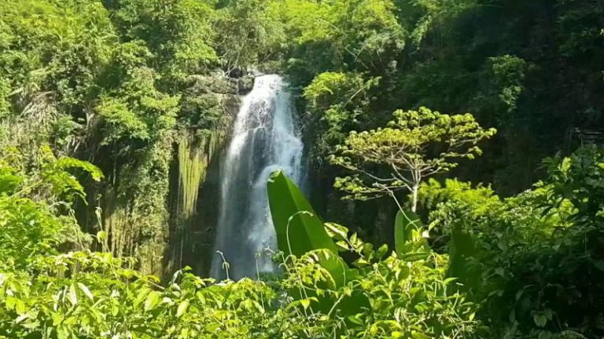
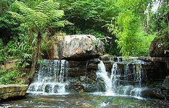
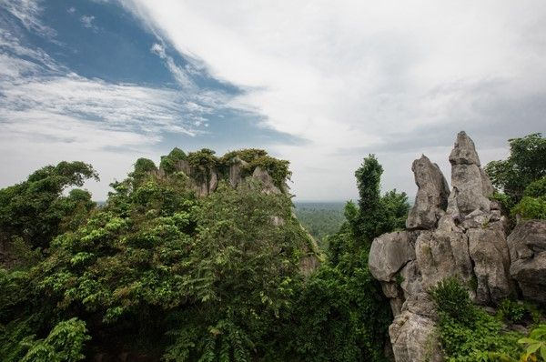
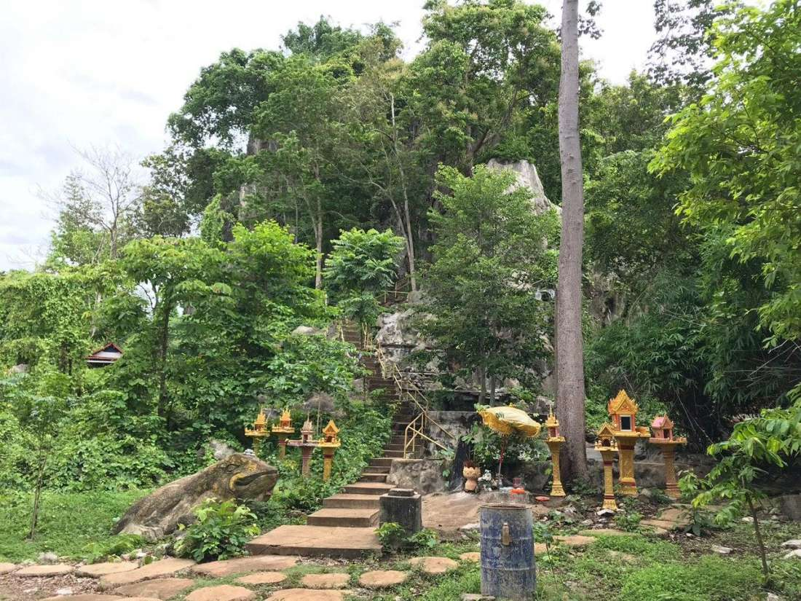
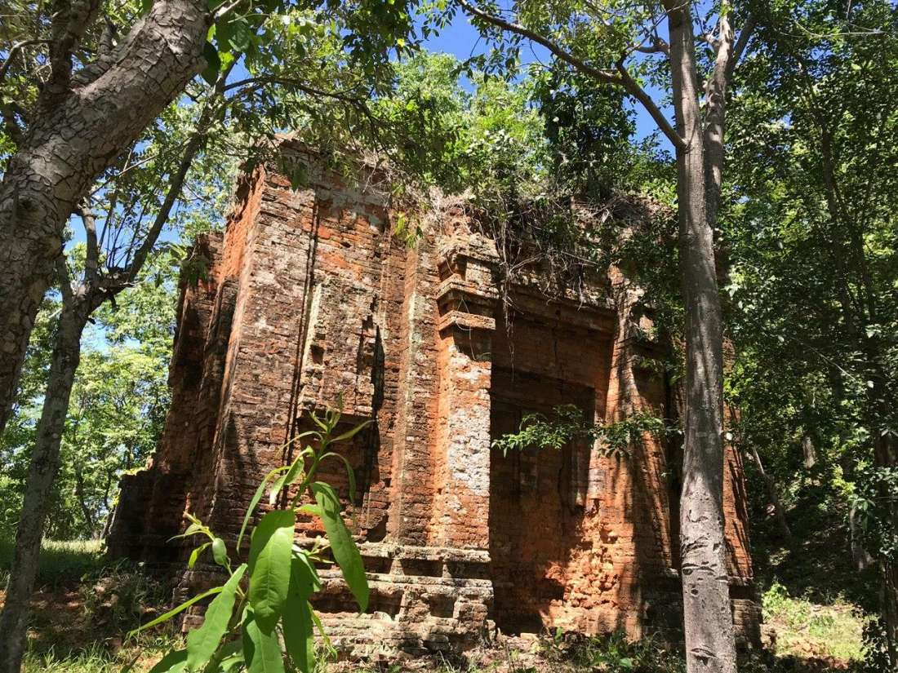
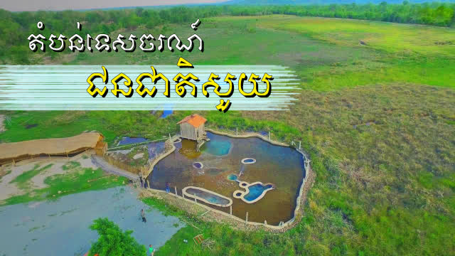

| ខេត្តកំពង់ស្ពឺ | |||
| ក្រមស្រុក | ស្រុក-ក្រុង | ជាឡាតាំង | ចំនួនឃុំ-សង្កាត់ |
| ០៥០១ | បរសេដ្ឋ | Borsedth | ១៥ |
| ០៥០២ | ច្បារមន | Chbar Mon | ៥ |
| ០៥០៣ | គងពិសី | Kong Pisei | ១៣ |
| ០៥០៤ | ឱរ៉ាល់ | Aoral | ៥ |
| ០៥០៦ | ភ្នំស្រួច | Phnum Sruoch | ១២ |
| ០៥០៧ | សំរោងទង | Samraong Tong | ១៥ |
| ០៥០៨ | ថ្ពង | Thpong | ៧ |
| ០៥០៥ | ឧដុង្គម៉ែជ័យ | Odongk Mae Chey | ៥ |
| ០៥០៩ | សាមគ្គីមុនីជ័យ | Somaki Mony Chey | ១០ |
| សរុបចំនួនឃុំ-សង្កាត់ | ៨២ឃុំ និង ៥សង្កាត់ | ||
| សារមន្ទីរនរៈបូរី | អំពែភ្នំ | ឧទ្យានជាតិព្រះសុរាម្រិតកុសមៈ | រមណីយដ្ឋានគីរីរម្យ(ក្រោម) | ចំបក់ |
|  |  |  |  |  |
| ទឹកជ្រោះអន្លង់រ័ត្ន | រមណីយដ្ឋានល្អាងភ្នំចាស់ | រមណីយដ្ឋានវប្បធម៌ធម្មជាតិភ្នំព្រះ | ប្រាសាទសាតក្អែកពង | តំបន់ទេសចរណ៍ជនជាតិសួយ |
|  |  |  |  |  |